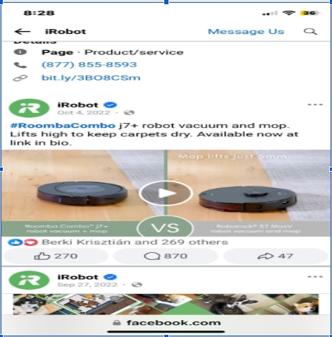
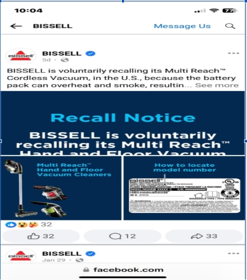
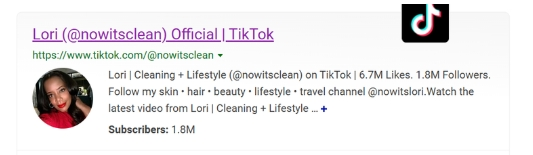
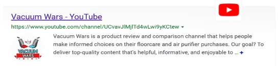
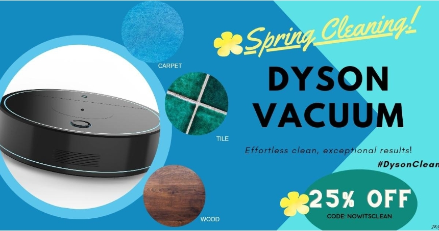
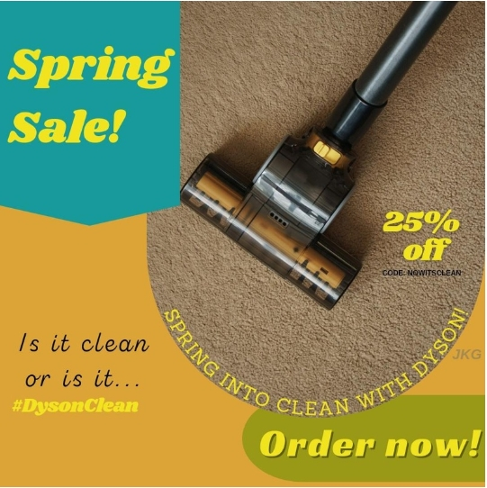
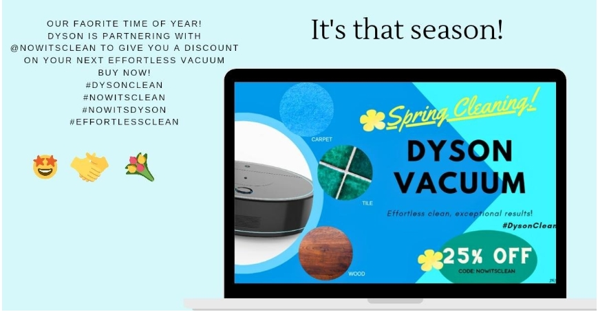
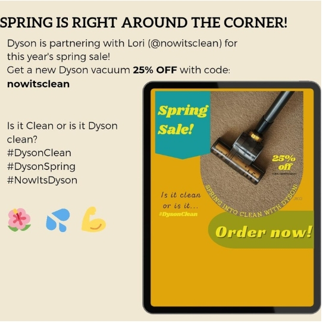

Mission focus
Dyson creates products that “solve problems” with state-of-the-art technology made by engineers and scientists.
- Company
- Dyson
- Founded
- 1991 · 33 years
- Origin
- Malmesbury, England
- Business model
- B2B and B2C
MRKT 458 Social Media Marketing · UMGC · Janelle Gardner
An interactive board-ready dashboard using the provided Dyson overview, competitor research, SWOT analysis, target market information, influencer opportunities, and social media post recommendations.
Overview
Dyson is an electric appliance manufacturer founded in Malmesbury, England by James Dyson in 1991. The company creates vacuum cleaners, air purifiers, hand dryers, hair dryers, fans, heaters, lights, and commercial products for B2B and B2C customers.
Dyson creates products that “solve problems” with state-of-the-art technology made by engineers and scientists.
Competitive research objective
How iRobot and Bissell use voice, tone, customer response, and content formats to drive engagement.

Posts range from mini reels to densely worded posts about appliance features, promotions, and company accomplishments. Posting ranges from 3+ posts per week to 1 a month.

Posts range from informational to casual question engagement and mini videos, with 1-2 posts per week.
Across TikTok, LinkedIn, X/Twitter, and Pinterest, each brand shows a different audience strength: Bissell leads TikTok with 117.6K followers and Pinterest with 12K followers, iRobot leads LinkedIn with 98K followers, and Dyson leads X/Twitter with 90.1K followers.
Dyson and iRobot are close on TikTok, with Dyson at 67.5K and iRobot at 70.5K, while Bissell is much higher. LinkedIn is the largest gap for Dyson: 524 followers compared with iRobot's 98K and Bissell's 43K. On X/Twitter, Dyson is more than double iRobot and more than four times Bissell. Pinterest creates another difference because Bissell has 12K followers while Dyson and iRobot have no provided Pinterest count.
Dyson's X/Twitter advantage suggests stronger awareness or conversation in real-time social channels, but the low LinkedIn count means Dyson has room to build B2B credibility, employer-brand visibility, and professional storytelling. TikTok is competitive but still behind Bissell, so Dyson should use more short-form demos, creator content, and product-problem videos to close the gap. Bissell's Pinterest presence also shows an opportunity for Dyson to test visual inspiration content around cleaning routines, home organization, and product care.
S.W.O.T Chart
Target Market
35+ years old, middle to upper income, single or married with pets, urban or suburban, with carpet and/or hardwood flooring.
Hotel/resort concierge management at 4/5-star properties with 20+ years of experience in densely populated metropolitan areas.
Potential company influencer partnerships

Posts daily cleaning tips and Amazon finds. Dyson already partners with Amazon, and Lori has a Dyson vacuum already mentioned in a post for vacuum deals. Social stats included: Instagram 499K, TikTok 1.8M, and YouTube @nowitsclean3039 with 524 subscribers.

Focused solely on floor cleaning, testing and reviewing vacuums by flooring type and best-vacuum videos. This niche audience can support word of mouth and reviews. Social stats included: YouTube 301K, Instagram @vacuumwars with 3,588 followers, and TikTok @vacuum_wars with 11.3K followers.
Social media post recommendations

Dyson vacuum with attachments, call to act: “Get Spring ready,” influencer: @nowitsclean, and focus on a discounted price for Spring deep cleaning.
Suggested text: “Is it clean or is it Dyson clean?” Hashtags: #DysonClean #GetSpringReady

Use a color scheme that compliments the Instagram logo, capitalize the Spring sale, and call consumers to order while Dyson is partnering with @nowitsclean.
Emoji direction: flower for spring, water for cleaning, and strong arm for strength.

Represent the joy of the discount, the spring season, and the partnership with excited, flower, and handshake emoji concepts.

Show vacuum attachments and the Spring-ready value proposition for consumers who want reliable deep-cleaning solutions.